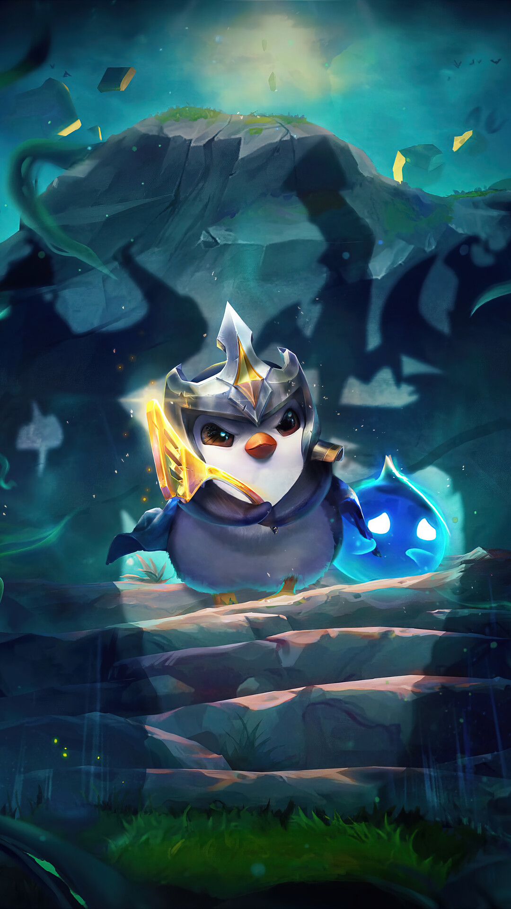

Busca estadisticas de jugadores
de toda la región

Somos SNFinder
Una herramienta diseñada para que los jugadores de League of
Legends pertenecientes al servidor de Latinoamérica Sur puedan
buscar información y estadisticas relacionadas con el perfil de
sus openentes y aliados en el juego.
Contamos con una amplia base de datos actualizada regularmente con
información detallada sobre cada jugador registrado en dicho
servidor.
¿Qué ofrecemos?
Buscar invocadores LOL
Ofrecemos un servicio de busqueda de perfiles de League of legends para saber las estadisticas generales de los invocadores en este juego
Buscar invocadores TFT
Ofrecemos un servicio de busqueda de perfiles de TFT para saber las estadisticas generales de los invocadores en este juego
¿Qué nos diferencia?
¡La velocidad de carga de nuestra pagina! Con una carga de 3bits por minuto logramos mostrarles la información que necesitan en un aproximado de 3 a 4 días hábiles. (La paciencia es la madre de las virtudes).